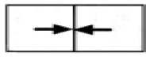
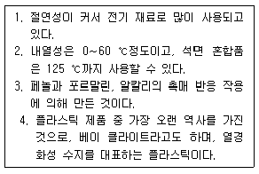

플라스틱창호기능사 (2005-07-17 기출문제)
1과목: 건축일반
1. 표준형 벽돌의 치수가 바르게 된 것은? (단위 : ㎜)
- 190 × 90 × 57
- 210 × 100 × 60
- 190 × 90 × 60
- 190 × 100 × 60
(정답률: 90%)

2. 벽돌 등을 모르타르로 쌓아서 축조하는 구조로 지진과 바람 같은 횡력에 약하고 균열이 생기기 쉬운 구조는?
- 나무구조
- 조적구조
- 철골구조
- 철근콘크리트구조
(정답률: 71%)
3. 조립구조의 일종으로, 기둥, 보 등의 골조를 구성하고 바닥, 벽, 천장, 지붕 등을 일정한 형태와 치수로 만든 판으로 구성하는 구조법은?
- 쉘구조
- 프리스트레스트 콘크리트 구조
- 커튼월구조
- 패널구조
(정답률: 71%)
4. 반지름의 제도표시 기호는?
- ø
- R
- THK
- S
(정답률: 87%)
5. 설계도면이 갖추어야 할 요건에 대한 설명 중 옳지 않은 것은?
- 객관적으로 이해되어야 한다.
- 일정한 규칙과 도법에 따라야 한다.
- 정확하고 명료하게 합리적으로 표현되어야 한다.
- 모든 도면의 축척은 하나로 통일되어야 한다.
(정답률: 99%)
6. 문과 문틀에 장치하여 열려진 여닫이 문이 저절로 닫아지게 하는 창호철물은?
- 도어후크
- 도어홀더
- 도어체크
- 도어스톱
(정답률: 78%)
7. 철골보에서 웨브플레이트의 두께는 최소 얼마 이상으로 하는가?
- 3mm
- 6mm
- 10mm
- 15mm
(정답률: 71%)
8. 철근콘크리트구조의 특징이 아닌 것은?
- 내구, 내화, 내진적이다.
- 자중이 가볍다.
- 설계가 자유롭다.
- 고층 건물이 가능하다.
(정답률: 74%)
9. 건축제도통칙에 정의된 제도지의 크기 중 틀린 것은? (단위 mm)
- A0 : 1189 × 1680
- A2 : 420 × 594
- A4 : 210 × 297
- A6 : 1⑤ × 148
(정답률: 86%)
10. 나무구조에 대한 설명 중 틀린 것은?
- 토대는 상부의 하중을 기초에 전달하는 역할을 한다.
- 평기둥은 2층 이상의 기둥 전체를 하나의 단일재로 사용하는 기둥이다.
- 층도리는 2층 이상의 건물에서 바닥층을 제외한 각 층을 만드는 가로 부재이다.
- 샛기둥의 크기는 본기둥의 1/2 또는 1/3로 한다.
(정답률: 72%)
11. 속빈 콘크리트 기본블록의 두께 치수가 아닌 것은?
- 220mm
- 190mm
- 150mm
- 100mm
(정답률: 82%)
12. 도면의 치수표시 방법에 대한 설명 중 옳지 않은 것은?
- 치수는 특별히 명기하지 않는 한 마무리 치수로 표시한다.
- 치수 기입은 치수선 중앙 윗부분에 기입하는 것이 원칙이다.
- 협소한 간격이 연속될 때에는 인출선을 사용하여 치수를 쓴다.
- 도면에 기입하는 치수는 ㎜ 단위로 숫자와 단위기호까지 표시하는 것이 원칙이다.
(정답률: 77%)
13. 조적조 벽체 중 공간벽에 대한 설명으로 잘못된 것은?
- 공간벽은 습기차단에 유리하다.
- 공기층에 의한 단열효과가 있다.
- 주로 내벽에 이용된다.
- 벽체에 공간을 두어서 이중으로 쌓는 벽이다.
(정답률: 70%)
14. 블록조에서 창문의 인방보는 벽단부에 최소 얼마 이상 걸쳐야 하는가?
- 5cm
- 10cm
- 15cm
- 20cm
(정답률: 62%)
15. 철근콘크리트구조 기둥의 최소단면적은?
- 300cm2 이상
- 400cm2 이상
- 500cm2 이상
- 600cm2 이상
(정답률: 80%)
16. 다음 중 제도 용구와 용도의 연결이 옳지 않은 것은?
- 컴퍼스 - 원이나 호를 그린다.
- 디바이더 - 선을 일정간격으로 나눈다.
- 삼각스케일 - 삼각형 모양을 그릴 때 사용한다.
- 운형자 - 복잡한 곡선이나 호를 그을 때 사용한다.
(정답률: 73%)
17. 건축물 중 일반주택건축의 실내구성에서 반자의 최소 높이는?
- 2000㎜
- 2100㎜
- 3000㎜
- 3100㎜
(정답률: 86%)
18. 블록구조에 대한 설명으로 옳지 않은 것은?
- 조적식 블록조 - 블록과 모르타르로 접합시켜 쌓아올려 벽체를 구성한다.
- 장막벽 블록조 - 칸막이벽으로서 블록을 쌓는 방식으로 상부에서 오는 하중을 받지 않는다.
- 보강 블록조 - 중공부(中空部)에 철근을 배근하고 콘크리트를 부어 저항력을 보강한다.
- 거푸집 블록조 - 특성이 서로 다른 벽돌과 블록을 혼용해서 벽체를 구성한다.
(정답률: 60%)
19. 주택에서 주로 쓰이는 계단 너비 1m 정도의 소형 계단으로 상자계단이라고 불리는 것은?
- 사다리
- 틀계단
- 옆판계단
- 따낸옆판계단
(정답률: 80%)
20. 조적식 구조에 관한 설명중 틀린 것은?
- 조적재를 모르타르로 쌓아서 벽체를 축조하는 구조이다.
- 개개의 재료와 교착제의 강도가 전체 강도를 좌우한다.
- 철사, 철망등을 써서 보강하면 더욱 튼튼하다.
- 철골조, PC구조, 목조 등이 있다
(정답률: 78%)
2과목: 플라스틱개론
21. 산업 재해 조사표에 기록할 사항이 아닌 것은?
- 재해 발생 일시와 장소
- 날씨
- 조사자의 의견
- 재해자의 급료
(정답률: 75%)
22. 사고의 원인중 인적 요인에서 생리적 원인이 아닌 것은?
- 수면 부족
- 신체기능 저하
- 음주
- 망각
(정답률: 67%)
23. 고소 작업시 주의사항으로 옳지 않은 것은?
- 신중하게 행동하고 모험적인 행동은 하지 않는다.
- 작업에 적합한 복장을 갖춘다.
- 턱끈이 없는 안전모를 쓴다.
- 정리, 정돈을 철저히 한다.
(정답률: 93%)
24. 상해의 종류에 의한 분류에 속하지 않는 것은?
- 골절
- 찰과상
- 추락
- 동상
(정답률: 88%)
25. 건설공사에 있어서 가장 안전을 도모해야 할 공사는?
- 가설공사
- 토공사
- 기초공사
- 철근 콘크리트 공사
(정답률: 65%)
26. 일정기간 동안에 근로자 1,000명에 대하여 발생한 재해자의 수를 나타낸 것을 무엇이라 하는가?
- 천인율
- 도수율
- 강도율
- 안전율
(정답률: 78%)
27. 하인리히(Heinrich, H.W.)의 재해발생 과정을 바르게 나타낸 것은?
- 개인적결함 → 사회적환경 → 불안전한행동 → 사고 → 재해
- 사회적환경 →개인적결함 → 불안전한행동 → 사고 → 재해
- 사회적환경 →개인적결함 → 불안전한행동 → 재해 → 사고
- 개인적결함 →사회적환경 → 사고 → 불안전한행동 → 재해
(정답률: 66%)
28. 산업 재해를 조사하는 사람이 유의해야 할 사항으로 옳은 것은?
- 재해를 조사할 때에는 책임을 추궁하는 방향으로 실시한다.
- 과거의 사고 경향, 사례, 조사 기록 등을 참고하여 조사한다.
- 조사자의 주관적인 입장에서 조사해야 한다.
- 재해발생한 후 사고 현장이 정리된 후에 조사한다.
(정답률: 80%)
29. 산업재해 원인 중 직접원인으로만 연결 된 것은?
- 불안전 행동, 불안전한 상태
- 교육적 원인, 관리적 원인
- 신체적 원인, 정신적 원인
- 안전 교육적 원인, 기술적 원인
(정답률: 90%)
30. 추락 재해의 예방 중 개구부·작업대 끝에서의 추락원인이 아닌 것은?
- 안전대를 사용하지 않았다.
- 난간·방책·덮개를 제거하고 했다.
- 덮개가 없다.
- 승강설비가 없다.
(정답률: 88%)
31. 다음 중 산업안전의 분야에 속하지 않는 것은?
- 기계안전
- 전자안전
- 화공안전
- 건설안전
(정답률: 69%)
32. 산업재해와 관련하여 사고 발생의 모형이 아닌 것은?
- 분산형(방사형)
- 집중형(단순자주형)
- 사슬형(연쇄형)
- 혼합형(복합형)
(정답률: 83%)
33. 불안전한 상태는 어느 것인가?
- 보호구를 착용하지 않는다.
- 안전장치가 없다.
- 무단작업을 한다.
- 안전장치를 사용하지 않는다.
(정답률: 66%)
34. 안전관리 조직의 기본 형태와 관련이 없는 것은?
- 직계식조직(Line system)
- 참모식조직(Staff system)
- 직계·참모조직(Line and staff system)
- 기능식조직(Functional system)
(정답률: 84%)
35. 온도가 몇도 정도 일 때 재해 발생 빈도가 가장 적은가?
- 10 ~ 12℃
- 13 ~ 16℃
- 17 ~ 23℃
- 24 ~ 28℃
(정답률: 87%)
36. 접착성이 아주 우수하며, 경화할 때 휘발물의 발생이 없고, 알루미늄과 같은 경금속의 접착에 가장 좋은 것은?
- 에폭시 수지
- 불포화 폴리에스테르 수지
- 알키드 수지
- 실리콘 수지
(정답률: 68%)
37. 다음 중 천연고무에 속하는 것은?
- 라텍스
- 부나에스
- 부나엔
- 네오브렌
(정답률: 78%)
38. 창호 기호에서 울거미 재료의 기호 설명이 잘못된 것은?
- Wd : 목재
- Pl : 플라스틱
- Ss : 강철
- Gl : 유리
(정답률: 87%)
39. 미술관, 박물관 등의 확산광을 필요로 하는 천창에 쓰이는 합성수지의 재료는?
- 메타크릴수지
- 멜라민 적층판
- 폴리에스테르
- 폴리스티렌폼
(정답률: 68%)
40. 열가소성수지의 성형법중 호퍼에 건조 재료를 넣어두면 거의 자동적으로 성형되어 나오는 방식은?
- 사출성형법
- 압출성형법
- 취입성형법
- 진공성형법
(정답률: 60%)
3과목: 작업안전
41. 플라스틱 창호의 공작법 중 틀린 것은?
- 창호의 겉모양은 매끈하고 갈라짐, 찢김 및 요철 등의 흠이 없어야 한다.
- 보강재가 필요한 경우 창틀재 내부에 보강재를 삽입한 후 나사못으로 고정시킨다.
- 빗물의 배수를 사전에 막기 위해 모든 구멍을 메운다.
- 창호에 부착하는 기밀재는 창틀의 폭 중앙에 상·하로 부착한다.
(정답률: 86%)
42. 아마인유, 건조제, 수지, 코르크 분말, 톱밥, 충전물 등의 원료로 만든 마루 마감 재료는?
- 비닐 시트
- 아스팔트 타일
- 비닐 타일
- 리놀륨
(정답률: 75%)
43. 다음 중 창호의 개폐방식에 따른 종류가 아닌 것은?
- 붙박이창
- 미서기창
- 발코니창
- 여닫이창
(정답률: 73%)
44. 다음은 어떠한 창을 표시한 것인가?

- 고정창
- 미서기창
- 여닫이창
- 미닫이창
(정답률: 75%)
45. 열경화성 수지에 응용되는 가장 일반적인 성형법으로, 분말 또는 정제형의 성형재료를 가열된 철제형에 넣어 140-180℃로 유압 또는 수압을 가하고, 수지를 가열중합하여 경화시키는 성형법은?
- 이송성형법
- 주조성형법
- 압축성형법
- 적층성형법
(정답률: 82%)
46. 다음 중 플라스틱 창호에 대한 설명으로 바르지 못한 것은?
- 기밀 성능은 일반적으로 목재창 보다 우수하다.
- 금속재창에 비해 단열성능이 우수하다.
- 금속재창에 비해 수밀성능이 우수하다.
- 목재창에 비해 현장에서 재조립, 재가공성이 우수하다.
(정답률: 84%)
47. 다음 중 사출 성형의 장·단점에 대한 설명으로 옳지 않은 것은?
- 고속, 대량, 자동화 생산이 가능하다.
- 원료의 낭비와 마무리 손질이 극히 적다.
- 금형이 저렴하다.
- 살 두께가 얇은 대형 성형품에는 적합하지 않다.
(정답률: 89%)
48. 다음과 같은 성질을 갖고 있는 플라스틱은?

- 페놀수지
- 요소수지
- 에폭시 수지
- 멜라민 수지
(정답률: 71%)
49. 합성수지의 저발포 제품으로 가볍고, 표면이 딱딱하며 합성목재로 불리는 것은?
- 리놀륨
- 켐우드
- FRP
- 페놀 폼
(정답률: 73%)
50. 플라스틱 창호의 보양으로 틀린 것은?
- 창호를 설치한 후 출입 또는 작업으로 손상될 우려가 있는 곳에는 틀이 손상되지 않도록 보양한다.
- 창호표면에 시멘트 모르타르나 기타 불순물이 묻을 때 에는 제거한다.
- 창호 운반시 제품의 표면이 손상되지 않도록 폴리에틸렌 필름 또는 테이프 등으로 포장하여 운반한다.
- 창호제품을 적재할 경우에는 폴리에틸렌 필름 또는 테이프 등을 벗겨내고 야적한다.
(정답률: 91%)
51. ABS수지를 이루는 요소가 아닌 것은?
- 아크릴로니트릴
- 부타디엔
- 스티렌
- 라텍스
(정답률: 75%)
52. 플라스틱 재료의 특성으로 맞지 않는 것은?
- 정전기의 발생량이 크다.
- 일반적으로 내후성이 나쁘고, 자외선에 약하다.
- 표면의 경도가 낮으며, 상처가 생기기 쉽다.
- 철에 비해 강도와 강성이 크고, 반복 하중에 강하다.
(정답률: 83%)
53. 보통 여닫이문의 문짝 상부에 달아 저절로 문이 닫히게 하는 역할을 하는 것은?
- 플로어 힌지(floor hinge)
- 도어 클로저(door closer)
- 피벗 힌지(pivot hinge)
- 도어 스톱(door stop)
(정답률: 85%)
54. 다음 플라스틱의 일반적 특성 중 옳지 않은 것은?
- 열을 차단하는 효과가 우수하다.
- 빛을 잘 투과시키는 투과성이 좋다.
- 산이나 알칼리 등의 화학약품에 부식이 된다.
- 고무줄과 같은 성질의 탄성이 있다.
(정답률: 68%)
55. 다음 중 플라스틱 창호의 부자재가 아닌 것은?
- 크리센트
- 호차
- 방풍모
- 개공기
(정답률: 82%)
56. 창호가 설치된 내외부의 압력차에 의한 통기량을 측정한 기준을 나타내는 특성치는?
- 내풍압성
- 기밀성
- 수밀성
- 차음성
(정답률: 72%)
57. 다음중 유기유리라고도 불리우며 투명성이 뛰어나 조명용으로 사용되는 수지는?
- 스티렌 수지
- 염화비닐 수지
- 아크릴 수지
- 프로필렌 수지
(정답률: 69%)
58. 플라스틱 재료의 성질에 대한 설명이다. 틀린 것은?
- 가볍고 강한 것이 만들어진다.
- 플라스틱 재료는 뛰어난 절연재료이다.
- 성형성이 좋다.
- 범용성 수지의 경우 가격이 비싸다.
(정답률: 85%)
59. 플라스틱 창호의 주요 원재료인 염화비닐수지(PVC)의 성질이 아닌 것은?
- 열경화성
- 자기소화성
- 열가소성
- 성형가공성
(정답률: 56%)
60. 창호재로 사용되는 합성수지가 아닌 것은?
- 메타크릴 수지
- 경질염화비닐 수지
- 폴리에틸렌 수지
- FRP
(정답률: 48%)